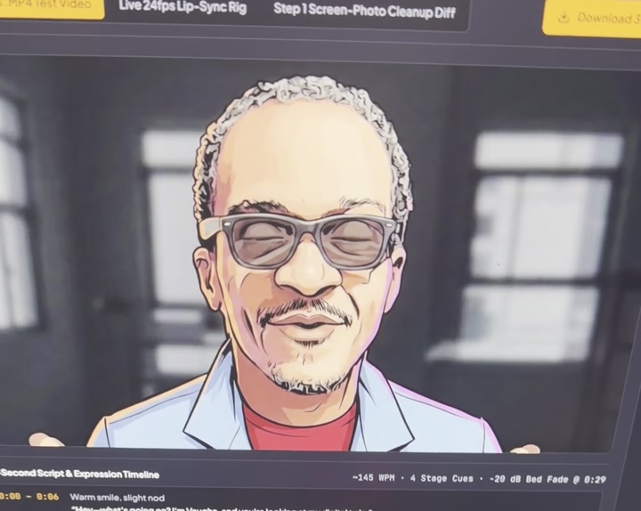

Shaped player · Step 1 of 4
A video with no box around it.
The figure in the corner is a playing video. Its edge follows the person, and everything outside that edge is this page. Drag him over this text, scroll the page behind him, or change the background.
Press Show the box to see the rectangle an ordinary player would draw for the same clip.
What this step proves
A normal video is a rectangle. Removing the background still leaves a rectangle of something, usually a flat color. Here the player has no rectangle at all: text and images show right up to the outline of the head and shoulders, on any background.
Taps and clicks also follow the shape. You can select this text beside his head, and you can only pick him up by touching him.

How this clip was made
One file holds two pictures stacked: the color frames on top and a black and white outline of the figure underneath. The page reads both halves of every frame and uses the outline to decide which pixels to draw.
That keeps it to a single ordinary H.264 file, which plays on iPhone, Android and desktop browsers alike.
Build order
- 1 · This pageOne clip playing over text and images with no visible rectangle.
- 2 · NextBackground removal inside the browser, so any uploaded clip gets its outline automatically.
- 3 · ThenA shaped embed: one snippet that drops the figure onto any website.
- 4 · ThenLive webcam, cut out in real time for streams.
Scroll room
This paragraph is here so there is something to scroll past him. On a phone, hold the figure and move it up into the cards above, then scroll with your other thumb. The page moves and he stays where you left him.
Because nothing outside his outline is drawn, there is no edge to line up, no matching background color to pick, and no corner to round off.